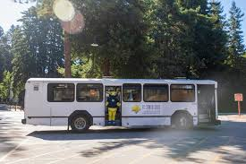
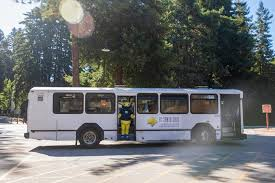

Lab 6 - Arrays and Objects
Challenge
Working with your partner, experiment with JavaScript arrays and objects.
Problems
I didn't have too many problems when completing this lab. I think the one part that I struggled with was the console because I was confused with how to indent. I solved this by first writing it in JavaScript and then coping it into my console.
Results
I think this lab turned out well. I think I'm still trying to figure out css and what I want my website to look like. I want it to be cohesive and nice. Overall, I think the labs are going well and my experience with JavaScript has been simple and straightforward. The directions have helped with this because they are guiding me step by step.
 
